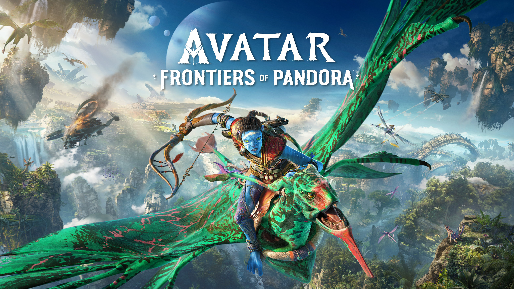
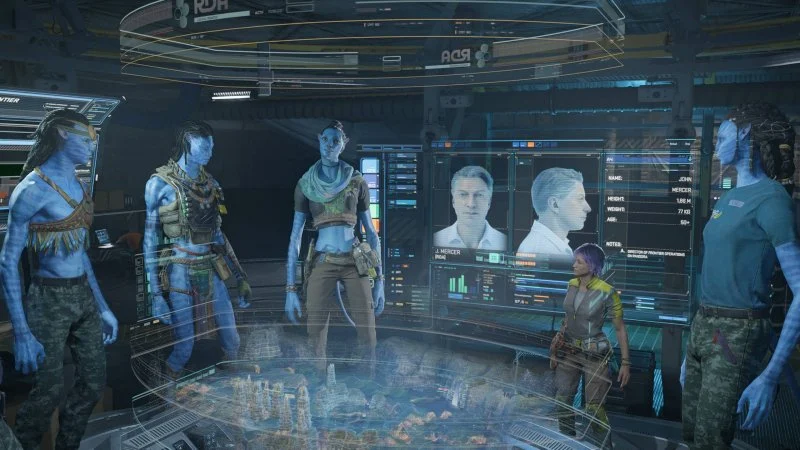
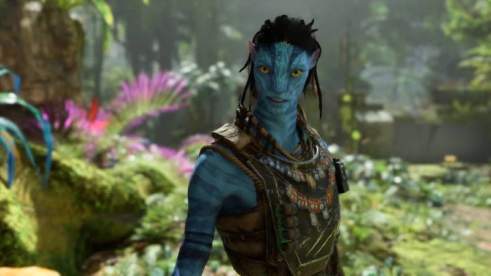
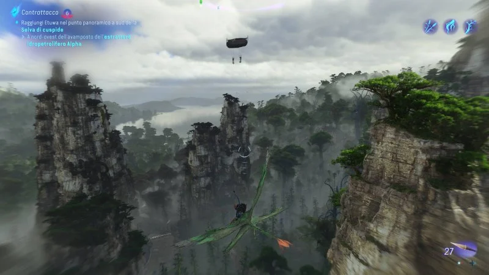
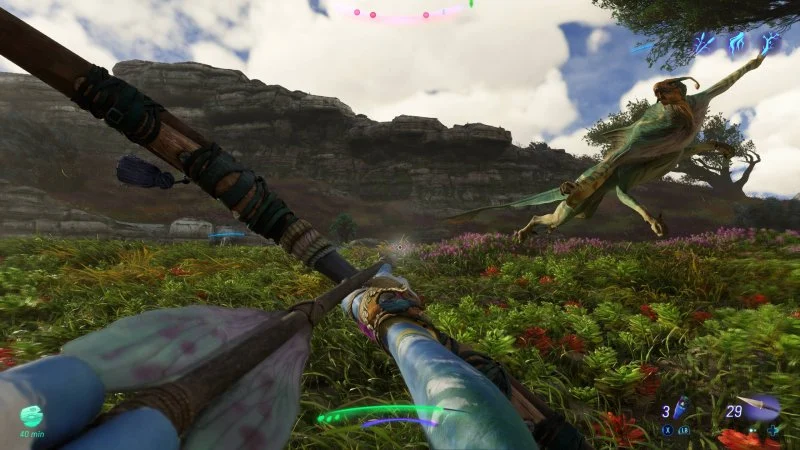
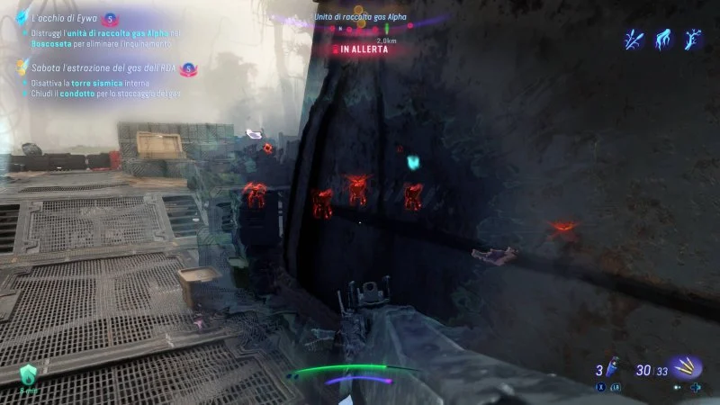
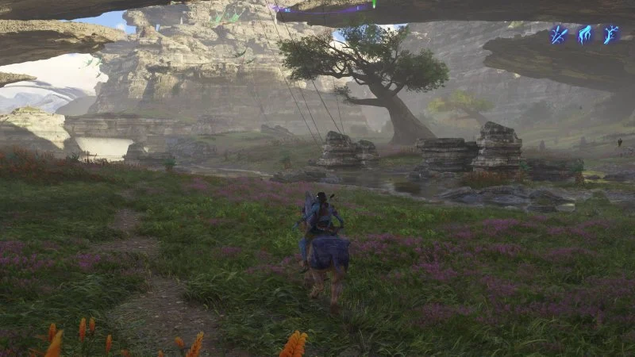
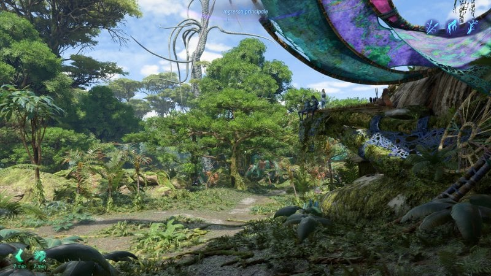
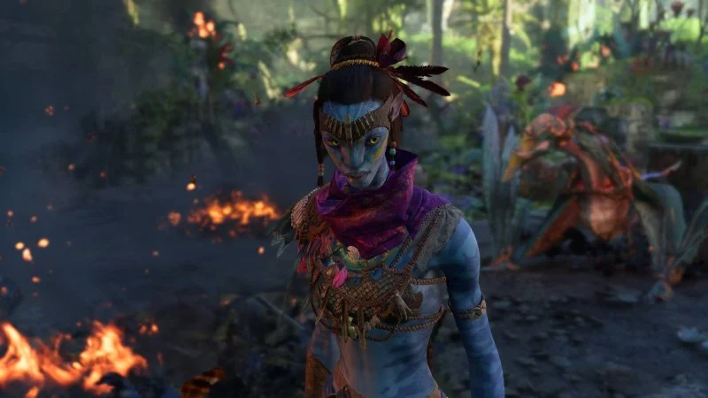

Benvenuto sul mondo di Pandora! 🌌 In Avatar: Frontiers of Pandora
partirai per un viaggio attraverso l'immensa e inesplorata frontiera occidentale. Scopri la tua
eredità perduta e cosa significa diventare na'vi e lotta al fianco degli altri clan per proteggere
Pandora dall'implacabile assalto dell'RDA.
Il gioco è disponibile in tutto il mondo su PlayStation®5, Xbox Series X|S, PC e Luna! Ottieni la
tua copia su Ubisoft Store, oppure accedi alla Ultimate Edition con Ubisoft+ su PC grazie a Ubisoft
Connect, oppure su Xbox Series X|S o Amazon Luna.

Trama Avatar: Frontiers of Pandora
La storia di Avatar: Frontiers of Pandora si svolge all'interno di una regione inedita di Pandora, quella
della frontiera occidentale: un ampio territorio diviso in tre zone, ognuna controllata da una differente
tribù. Protagonista dell'avventura è un orfano Na'vi che è stato allevato e addestrato all'interno di una
struttura RDA, parte di un programma che la corporazione militare ha messo in piedi per formare soldati
imbattibili.
Quando però scoppia la guerra, l'insediamento viene coinvolto negli scontri e lo spietato direttore John
Mercer ordina l'eliminazione del progetto e dei suoi giovani componenti, che si salvano da un'esecuzione
sommaria solo grazie all'intervento della loro tutrice umana. Quest'ultima decide di nascondere i ragazzi
all'interno di capsule criogeniche, con l'intenzione di risvegliarli non appena possibile.
Passano ben quindici anni, il nostro personaggio si desta finalmente dal suo sonno e scopre che la struttura
in cui si trova è ormai abbandonata, ma le truppe RDA non hanno mai smesso di cercare lui e i suoi compagni,
che fuggono grazie all'aiuto di un guerriero di nome So'lek. Condotti all'interno di una delle basi della
Resistenza, questi esuli decidono di unirsi alla lotta per la liberazione di Pandora dalle truppe militari
provenienti dalla Terra.
I presupposti narrativi di Avatar: Frontiers of Pandora sono senz'altro interessanti: una volta determinato
il nostro protagonista tramite un semplice editor che ci permetterà di sceglierne anche il sesso oltre
all'aspetto, ci troveremo di fatto a controllare un Na'vi educato dagli esseri umani, che non conosce le
proprie origini né tantomeno i costumi delle tribù che abitano la frontiera occidentale, e che per questo lo
guardano con sospetto.
Si tratta per certi versi di una rivisitazione della storia di Jake Sully, il protagonista cinematografico,
che funziona molto bene quando si tratta di spingerci a conoscere le meraviglie di questo mondo alieno, il
rapporto simbiotico che i Na'vi hanno con la natura che li circonda e il potente messaggio ambientalista che
si distingue chiaramente in sottofondo; ma che traballa a dir poco sul piano della costruzione della storia,
delle motivazioni della lotta e dei cattivi, assenti per quasi tutta la campagna.
N.B. Avatar: Frontiers of Pandora non è doppiato in italiano

"Riunione operativa con foto segnaletica in Avatar"
Avatar - Struttura: un open world che stenta a decollare

"I personaggi che incontreremo in Avatar potranno affidarci delle missioni"
Pur collocate all'interno della cronologia ufficiale della saga di Avatar, le vicende narrate nel gioco
Ubisoft sono fondamentalmente inedite e i reali collegamenti con i film si riducono al contesto.
Nonostante ciò, lo sviluppo della storia rispetta determinati canoni e ci tiene a presentare sullo
schermo con i giusti tempi situazioni ormai iconiche, come ad esempio la cerimonia d'iniziazione in cui
un Na'vi viene scelto da un Ikran e i due stabiliscono un rapporto che durerà per tutta la vita.

"Il volo è un elemento fondamentale in Avatar"
Volare darà una svolta alla struttura di Frontiers of Pandora, consentendo finalmente all'open world
messo a punto da Massive Entertainment di aprirsi e spiegare metaforicamente le sue ali, lasciandoci
assaporare la notevole verticalità degli scenari ed entrare nel classico loop che consiste nella
liberazione degli avamposti e nella distruzione delle piattaforme volanti che inquinano l'aria.
Ovviamente c’è la possibilità di concentrarci sugli incarichi principali della storia oppure di
dedicarci alle tante missioni secondarie accessibili dopo aver parlato con questo o con quel
personaggio, pur dovendo fare i conti con un sistema di progressione che non ci vedrà crescere
abbastanza in fretta da poterci lanciare agevolmente nelle missioni più avanzate senza preoccuparci del
livello suggerito.
Dunque, quanto dura Avatar: Frontiers of Pandora? Difficilmente arriverete ai titoli di coda in meno di
venti ore, pur correndo e ignorando tutto ciò che c'è di facoltativo nella campagna: contenuti che
andranno ad arricchire, probabilmente anche a raddoppiare, la durata di un'esperienza che si presta a
differenti approcci, come ormai da tradizione per gli open world di Ubisoft.
Il gioco consente infatti di optare per una modalità priva di indicatori, in cui bisogna cioè
individuare i luoghi da raggiungere di volta in volta sulla base di una serie di indizi, godendosi così
l'esplorazione e la scoperta dello scenario, oppure servirsi dei soliti aiuti che forniscono sempre la
direzione giusta verso cui muoversi per fare più in fretta.
Gameplay: Far Cry con la pelle blu

"L'arco è la prima arma con cui si ha a che fare in Avatar"
Nel corso della campagna di Frontiers of Pandora avremo modo di utilizzare sia strumenti Na'vi che fucili
RDA, nella fattispecie tre tipologie di arco, lance in grado di penetrare il metallo, fionde con cui
lanciare potenti esplosivi, granate stordenti, mitragliatrici leggere, fucili a pompa e occasionalmente
lanciarazzi: una discreta selezione, fatta di strumenti piuttosto diversi.

"La visione speciale permette di percepire i nemici anche dietro i muri in Avatar"
La loro efficacia dipende dal contesto e dall'avversario, ci troveremo a combattere contro militari a
piedi (terribilmente insidiosi, anche perché alti la metà di noi e muniti di fucili che possono
ammazzarci in pochi secondi) o a bordo di esoscheletri più o meno corazzati, veicoli volanti e stop.
Dopodiché c'è chiaramente l'ampia fauna che presidia le varie zone della mappa, composta anche da feroci
predatori.
immagine: videogioco9 (con didascalia: "Potremo anche andare a "cavallo" in Avatar: Frontiers of
Pandora")

"Potremo anche andare a "cavallo" in Avatar"
L'esplorazione paga dazio rispetto ad alcune esigenze di progressione narrativa: correre fra le pianure
di
Pandora per coprire ampie distanze non è molto divertente né le sezioni di arrampicata sulle rocce
esprimono
concetti brillanti, anzi finiscono un po' per porsi come l'emblema di ciò che solitamente non funziona
nel
platforming in prima persona, sempre molto approssimativo.
Sbloccare l'uso dell'Ikran consente al gioco di introdurre un paio di concetti molto spettacolari, ad
esempio i tuffi nel vuoto con recupero al volo e, sebbene viaggiare sul dorso di questa sorta di enorme
uccello si riveli una soluzione meno rapida di quanto sperassimo nei tragitti più ampi, non c'è dubbio
che
l'esperienza guadagni parecchio quando finalmente si comincia a volare.
Cooperativa
Avatar: Frontiers of Pandora include una modalità multiplayer cooperativa online che consente di
affrontare
la campagna insieme a un amico, a prescindere dalla piattaforma visto il supporto per il cross-play.
Anche
questo aspetto del gioco riprende insomma quanto visto in Far Cry, con una progressione che viene
condivisa
fra i due utenti: non bisognerà rigiocare le missioni già completate in co-op.
Realizzazione tecnica: spettacolare ma non troppo

"La vista fuori dall'albero casa riempie gli occhi in Avatar"
Ci sono sicuramente scorci e sequenze in Avatar: Frontiers of Pandora che riusciranno a emozionarvi e a
comunicare la cura e l'impegno che il team di sviluppo ha profuso per ricreare la frontiera occidentale
di Pandora nel gioco. Alcuni scenari riempiono gli occhi con una quantità di oggetti incredibile, e la
maggior parte di essi si muove in qualche modo, che si tratti di piante o animali.
Le sequenze di intermezzo rappresentano ovviamente la parte visivamente più convincente del pacchetto,
quella che utilizza geometrie ed effetti potenziati rispetto a ciò che si vede durante la partita,
quest'ultima tendente al piatto in alcuni momenti della giornata nonché vittima di evidenti problemi di
streaming degli asset durante le fasi di volo.
immagine: videogioco11 (con didascalia: "I Na'vi sono realizzati molto bene in Avatar: Frontiers of
Pandora")

"I Na'vi sono realizzati molto bene in Avatar"
Le tre regioni che compongono lo scenario dell'avventura sono piuttosto diverse e la prima, la Foresta
dei Kinglor, si pone sfortunatamente come la meno suggestiva per design e colori: non il miglior
biglietto da visita durante le ore iniziali di una campagna che, come detto, stenta a ingranare. Alcune
scene tuttavia restano notevoli e la bellezza di determinati scorci è indubbia.
I Na'vi sono molto ben realizzati e gli sviluppatori hanno fatto un gran bel lavoro nel cercare di
caratterizzarli grazie a tutta una serie di dettagli e ovviamente all'abbigliamento, anche se
distinguerli e ricordarne i nomi è un altro paio di maniche. Il comparto audio vede la presenza di
dialoghi ben interpretati in inglese e di una colonna sonora piacevole e coinvolgente.
Incassi e costi del gioco Avatar
Categoria
Dettaglio
Importo (Stimato)
Costi di sviluppo
Produzione e sviluppo del gioco tripla A.
$150-200 milioni
Marketing
Campagne pubblicitarie globali.
$50-100 milioni
Ricavi totali
Vendite complessive entro gennaio 2024.
$133 milioni
Giocatori totali
Utenti unici registrati entro gennaio 2024.
1,9 milioni
Vendite su Steam
Ricavo lordo da vendite digitali su Steam.
$3,56 milioni
Ricavo netto Steam
Guadagno netto dopo tasse e commissioni.
$1,05 milioni
Vendite in Giappone
Copie fisiche PS5 vendute nella prima settimana.
8.363 copie
Classifica UK
Posizione nella classifica dei giochi fisici al lancio.
5° posto
Feedback critica
Recensioni miste, con Metacritic 72/100 (PC, PS5).